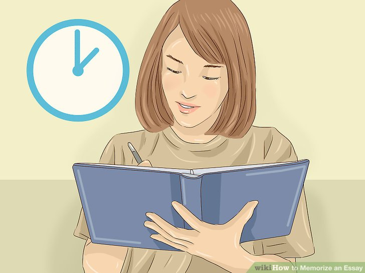
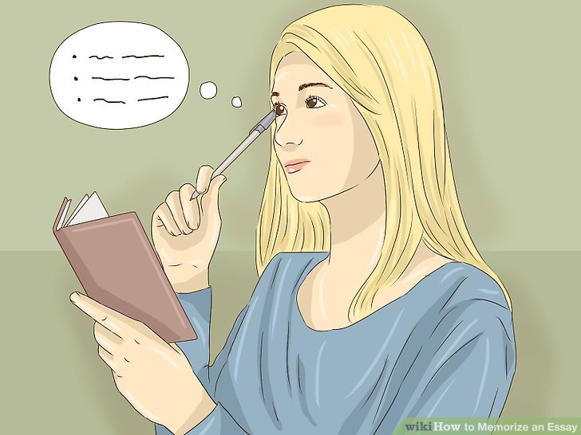
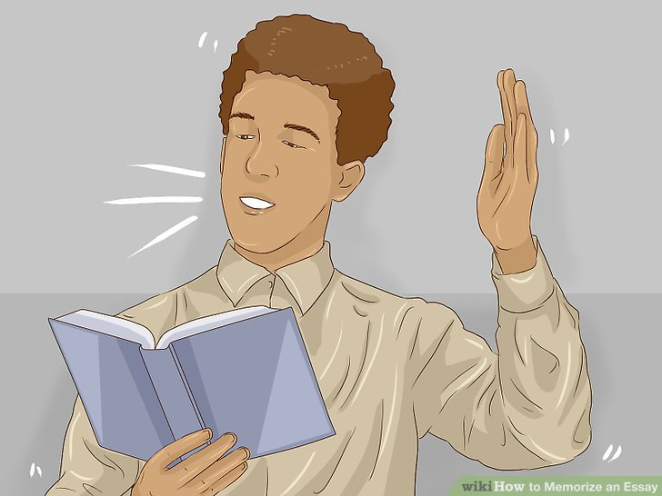
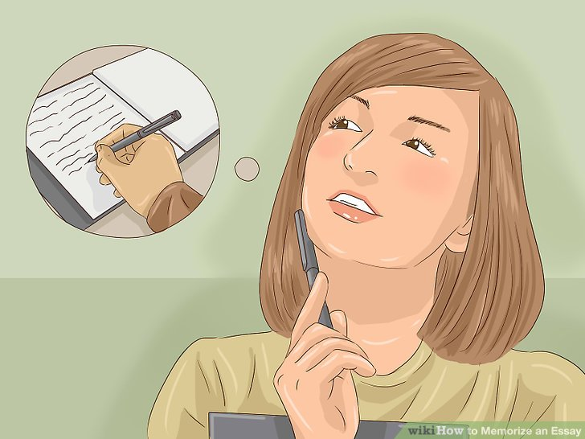

How to write an essay
How to Memorize An Essay :
Memorizing an essay is a great way to ace tests, rock presentations, and increase your overall knowledge. If you want to memorize an essay word for word, take things slowly by studying short parts one at a time. Memorization techniques such as visualization and physical cues can help you recall this information on demand. Of course, sometimes you don’t need to memorize things exactly. You may find it more useful to memorize the main ideas or important quotes instead.

1.Make a schedule.
Plan out how long you have to memorize the essay. If you have more time, you can study a little each day for 20 or 30 minutes. If you only have a day or 2, you can memorize it in 30-minute chunks with a break of an hour or 2 in between.
2.Break the essay down into parts.
Memorization is easiest when done in small chunks. Break the essay down into small sections. Depending on the length of the essay, each section might be a few sentences, one paragraph, or even one page.

3.Memorize a little bit each day.
Start early when you need to memorize something. Give yourself 1 day for every paragraph or page. Master 1 section each day. Once you have memorized 2 sections separately, try putting them together

4.Read the essay out loud to start learning it.
Reading the essay out loud is important because it forces you to read and speak every single word in the essay. This will help you remember it.
5.Test yourself after reading.
After you have studied the text for a while, put it down, and recite as much as you can from memory. At first, you may not remember much, but every time you practice, you will recall more and more.
Use a partner to test you on what you've memorized. If you miss a word or forget a line, they can prompt you by telling you the next word or two.
You might also want to arrange to practice in front of an audience of a few people. This will help to add some pressure, which may be beneficial to you later.
6.
Start from the end if going from the beginning is not working.
If the essay is long, you may find it easier to start at the end. Begin by memorizing the last sentence or paragraph, then move back to the sentence or paragraph right before that.

7.
Break up your study session to memorize quickly.
If you only have a short time to learn the essay, you should study it in small doses with breaks in between each session. Use memory boosting techniques, such as visualization and walking back and forth, to help make your memorization more effective.
For example, you might study it for 15 minutes and take a 10-minute break before studying for another 15 minutes.
Try writing out the essay once or twice. This can improve your memory.
Avoid cramming the night before. Memorizing something in 1 session is not the most effective way to learn it. Repetition in small chunks will help more than cramming the essay all in 1 long session.